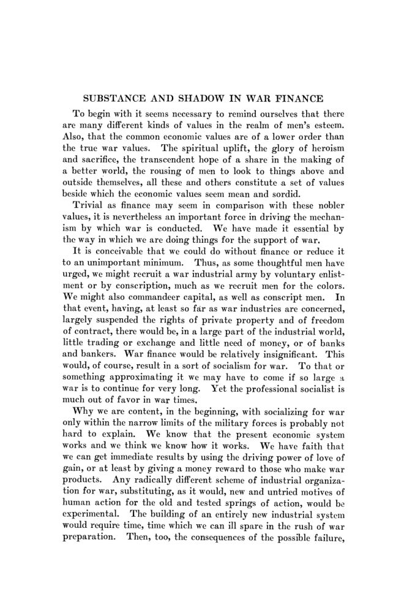

Plehn, 1918: o custo real da guerra e sua sombra em dinheiro
Leitura: 9 min
Carl C. Plehn trata as finanças como sombra do trabalho humano para separar o custo real da guerra de sua expressão em dinheiro e discutir inflação, impostos e empréstimos.


Dizer que doze meses de guerra custaram 10 bilhões de dólares, escreve Carl C. Plehn, é tão incompleto quanto dizer que custaram 10 bilhões de toneladas. Toneladas de quê, seria a pergunta imediata. As coisas efetivamente gastas na guerra são os serviços de soldados, marinheiros, transportadores e enfermeiras, os alimentos, as roupas, os canhões, as munições, os navios e os aviões. O dinheiro apenas os mede e registra.
Plehn, da University of California, organiza o artigo em torno de uma imagem: as finanças são a sombra projetada pelo trabalho humano, que é a substância. Desviar a atenção da sombra para a substância, diz, ajuda a evitar algumas das falácias que haviam turvado a discussão sobre as finanças de guerra.
Por que a guerra não se esgota por falta de dinheiro?
A primeira falácia é a dos que previam que as grandes guerras modernas seriam caras demais para financiar ou terminariam logo por exaustão financeira. Se queriam dizer que homens e recursos se esgotariam, foram maus profetas; se queriam dizer que as finanças em si acabariam, enganaram-se sobre a natureza do capital. Não se gasta a sombra de uma árvore viva sentando-se nela. Enquanto houver homens que trabalham, coisas para possuir e usar, e enquanto durar o sistema econômico, haverá finanças. A prova estava nos fatos: no quarto ano da guerra, os desembolsos mensais eram cada vez maiores.
O capital, insiste Plehn, não é um monte de sucata acumulada, mas o comando sobre a riqueza futura. As gerações não se sucedem em turmas separadas, mas numa procissão contínua, e cada uma assume os encargos da herança que recebe. Essa continuidade é o que permite ao crédito comprometer o futuro para pagar o presente.
Plehn lembra que finanças não são inevitáveis. Seria possível recrutar um exército industrial por alistamento ou conscrição e requisitar capital, como se conscrevem homens; haveria então pouca troca, pouca necessidade de moeda e de bancos, uma espécie de socialismo para a guerra. Os países preferiam usar o sistema que conheciam, movido pelo desejo de ganho, porque substituir motivos testados por motivos novos seria uma experiência arriscada demais em plena guerra e porque se supunha que, com a paz, se voltaria ao individualismo econômico.
O que é custo real?
O custo econômico da guerra só pode ser medido, como sugeriu Pigou, pelo paralelo daquilo de que se tem de abrir mão. Os bens absorvidos pela guerra saem do mundo das trocas: o soldado não produz para o mercado, e as munições que ele gasta não são matéria-prima para nada. Sua remuneração não é salário, pois nenhuma soma em dinheiro compensaria seu serviço. Plehn ilustra com uma tribo de mil trabalhadores que converte duzentos de seus melhores pastores e lavradores em sacerdotes por um período indeterminado. Os oitocentos restantes precisam trabalhar mais ou renunciar a mais de um quinto do que costumavam ter.
O exemplo sugere três coisas. O problema é sobretudo de uma nova divisão do trabalho e de uma produção maior. Há um limite para o número dos que podem rezar, que depende dos recursos dos demais. E é preciso um grande aumento temporário dos bens públicos e uma redução dos privados, transferência que não precisa ser permanente se a nova ordem não o for.
De onde vêm os recursos?
As lacunas deixadas pelos que estão nas armas são preenchidas, por meio das finanças, por três fontes: o lazer, a economia no uso dos bens e as invenções. As invenções não se fazem por encomenda, embora os períodos de grandes guerras tenham sido períodos de grandes inventos. A fonte maior e mais confiável é o lazer, entendido como todo o tempo não dedicado à atividade econômica: o desemprego causado pelo desajuste entre oferta e demanda de trabalho, a reserva de quem trabalha abaixo da capacidade, o lazer protegido por lei, como o da jornada de oito horas, e o vasto lazer das mulheres. Uma hora a mais numa jornada de oito equivale a um acréscimo de 12,5%.
A mobilização do lazer podia ser facilitada por agências de emprego que levassem os trabalhadores das indústrias não essenciais para as essenciais, mas era promovida sobretudo pelos altos salários da indústria de guerra. Na economia de consumo, Plehn destaca a política americana de apelo direto ao patriotismo: em vez de deixar o preço do trigo subir a um nível quase proibitivo, como Hoover dizia que provavelmente teria ocorrido, o governo estimulou a abstenção voluntária. O hábito de ação patriótica, observa, espalhou-se para outros campos.
Para o indivíduo que quer poupar para pagar impostos e comprar títulos, Plehn segue o pequeno livro de Pigou, War and Economics. Ao cortar um gasto, libera-se o serviço de homens e máquinas; se eles não tiverem utilidade para o governo, o ônus recai inteiro sobre o público. Por isso, entre dispensar um motorista e um velho jardineiro especialista em orquídeas, deve-se dispensar o motorista. A guerra também embaralha as categorias: um bem de primeira necessidade em tempo de paz, como o algodão, pode virar luxo para quem fica em casa, e se faltar algodão para explosivos pode ser dever usar seda.
A inflação ajuda ou atrapalha?
A inflação, definida como um aumento da moeda mais rápido que o da produção de bens, aparece como uma antitoxina, cura e veneno ao mesmo tempo. O primeiro passo para converter uma economia de paz em economia de guerra é oferecer preços altos pelos suprimentos militares, e o governo entra no mercado como um comprador novo e riquíssimo, cujo poder de compra, qualquer que seja sua forma, é um acréscimo à moeda. O dano está na distribuição.
“A pressão que a inflação exerce é muitas vezes cruel e muito desigualmente distribuída.” (“the pressure that inflation exerts is often cruel and very inequitably distributed”)
A frase é de Kemmerer. Plehn acrescenta que a inflação é uma forma oculta de tributação que não aumenta, mas diminui os fundos públicos, e que a área de sofrimento que cria provoca uma reação: a demanda por controle de preços, os ataques aos lucros de guerra e a defesa do controle estatal das ferrovias e de outras indústrias essenciais.
Impostos ou empréstimos?
A controvérsia real, para Plehn, não é entre só impostos e só empréstimos, posição que atribui a extremistas sobretudo na Alemanha, mas entre os que querem tudo por impostos e os que querem tributar pesadamente e tomar emprestado o restante. Os dois meios criam alguma inflação, porque é o gasto súbito para fins não econômicos que a provoca; os impostos, por cortarem mais o poder de gasto do contribuinte, criam menos. Um empréstimo para construir o Canal do Panamá não cria inflação; um empréstimo para comprar pólvora cria, não por ser empréstimo, mas pelo destino do gasto.
Os defensores de só impostos diziam que não se pode disparar em 1918 um projétil que será fabricado em 1930. Plehn aceita o fato, mas rejeita a conclusão de que o empréstimo não transfere ônus ao futuro, que considera um sofisma: ela supõe que os fundos representam apenas realidades presentes. Lembra ainda que um imposto de 100% sobre toda renda transferiria toda a propriedade dos muitos ao todo, e que o plano de tudo por impostos seria um socialismo disfarçado, assim como a conscrição industrial seria um socialismo declarado. O governo já é sócio oculto de toda propriedade e de todo trabalho pelos impostos regulares; se se quer manter os motivos econômicos, é preciso deixar ao sócio ativo o bastante para despertá-los.
“Podemos parar o relógio, mas não podemos parar o tempo.” (“We can stop the clock, but we cannot stop time.”)
O valor do capital, escreve, é o valor presente de um fluxo de renda futura, e o crédito é o meio pelo qual a sombra das safras vindouras e do trabalho das gerações futuras é projetada no presente. Com uma riqueza estimada em US$ 220 bilhões e uma renda de US$ 40 bilhões por ano, uma hipoteca do governo sobre metade da renda corrente daria, a 5%, uma capacidade de endividamento não muito inferior a US$ 400 bilhões. Isso não significa jogar todo o ônus para o futuro: impostos imediatos são um tônico para o crédito, desde que não sejam tão pesados que sequem as fontes da renda futura. Não pode haver proporção fixa entre impostos e empréstimos, porque o custo da guerra é desconhecido, e a capacidade de pagar impostos cresce à medida que o contribuinte se acostuma ao fardo.
Na minha leitura
Na minha leitura, a contribuição do artigo é o deslocamento da pergunta. Em vez de perguntar de onde virá o dinheiro, Plehn pergunta de onde virão o trabalho e os bens, e responde com uma lista concreta: horas a mais, consumo a menos, trabalho de quem estava fora do mercado. É a abordagem do custo de oportunidade aplicada a uma economia inteira, e permite ver que a restrição efetiva de um esforço de guerra é a capacidade produtiva, não a disponibilidade de fundos.
No debate entre impostos e dívida, o argumento central é temporal. Para Plehn, a dívida não transfere ao futuro os bens consumidos hoje, mas transfere a distribuição do ônus de pagá-los, e permite suavizar a tributação ao longo dos anos. A discussão sobre a equivalência entre impostos e dívida e sobre a suavização tributária retomaria essas mesmas questões com instrumentos formais.
Glossário
- Custo real da guerra
- na expressão de Pigou, os bens e serviços de que a sociedade abre mão para fazer a guerra.
- Exaustão financeira
- tese de que uma guerra terminaria quando os beligerantes não pudessem mais financiá-la.
- Lazer, em Plehn
- todo o tempo não dedicado à atividade econômica, inclusive o desemprego e o trabalho abaixo da capacidade.
- Inflação
- na definição citada por Plehn, aumento da moeda mais rápido que o aumento da produção de bens.
- Moeda fiduciária (fiat money)
- papel-moeda de curso legal sem lastro em metal.
- Valor presente
- valor hoje de um fluxo de rendas futuras, descontado pela taxa de juros.
- Sócio oculto (sleeping partner)
- imagem de Plehn para o governo, que participa de toda renda por meio dos impostos.
Fontes
- Substance and Shadow in War Finance — Carl C. Plehn (University of California) (pp. 564–578). JSTOR · Internet Archive (PDF)
- Edição completa, com os demais artigos: Nº 153 do Arquivo.
Documento em domínio público (EUA, publicado antes de 1931), via JSTOR Early Journal Content e Internet Archive. Resumo e comentário do autor deste site, sem afiliação com a American Economic Association. Encontrou um erro? Escreva: a correção é publicada no próprio texto, com data.
← Cole, 1918: o trabalhismo britânico entre o ofício e o controle ↑ Nº 153 · O trabalhismo britânico, a liga dos agricultores e a sombra das finanças